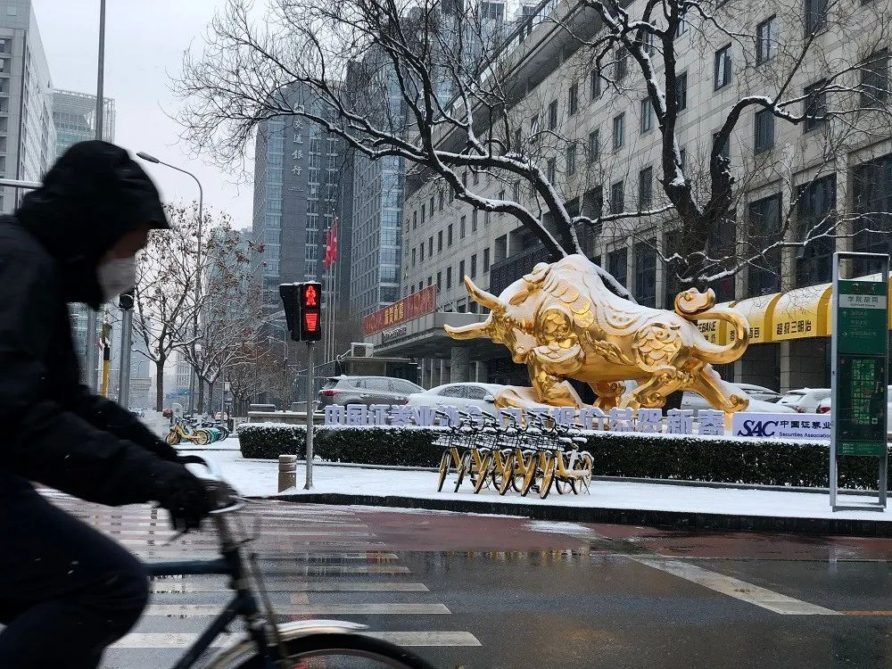

“猎毒者”：上海“一号病人”流调的背后
原文链接 备份链接 很多时候，流调人员不像医生，患者会主动尽可能多地给医生提供有用信息。流调人员说，希望市民在经历过疫情之后，能够了解到流调的重要性，为他们将来的工作提供更多便利。 记者 | 应 琛 当大家对新冠肺炎“零号病人”议论纷纷之 …

顶住开市压力，A股在大跌后逐渐修复，沪指重回3000点，创业板创下新高。未来中国的经济增长靠什么？不是靠短期的货币政策、财政政策，而是消费升级与产业升级，A股已然掀起科技热潮

文 |《财经》记者 郭楠 杨秀红 特约记者 辛然
编辑 | 陆玲
鼠年春节，中国版图成为了新冠肺炎疫情地图，数字的变化，事件的发酵，情绪的积攒，所有的压力都集中在了2月3日延迟开市的A股。
证监会在开市前发声，2月3日股市开市，是权衡各种因素的结果，从一个侧面表明了对市场、对规则的尊重和战胜困难的信心。央行更是在公开市场投放1.2万亿元流动性并降息。此后政策力度不减，再融资新规落地，MLF、LPR利率跟随下调。
8.73％，沪指开盘创下了多年跌幅纪录，点位逼近2700点，超出了市场预期。同时，北上资金逆势买入近200亿元。恐慌与理智并存，危与机同在，大跌之后创业板指加速反弹，并创出新高，沪指也在2月20日回归3000点。
分析者们类比2003年的非典，计算着疫情对经济的拖累，猜测政策的走向以及市场的涨跌。悲观者认为，新冠肺炎疫情影响超过非典，同时政府不会刺激房地产。而更多的乐观者表示，全国统一的防控行动更快更坚决，疫情将更快缓解。
“未来中国的经济增长不是靠短期的货币政策、财政政策，而是消费升级与产业升级的趋势。”中金公司首席经济学家梁红对《财经》记者表示。
在A股中不仅能看到眼下，也能看到未来。短期内，口罩、肺炎相关概念受到爆炒后逐步退烧，在线教育、在线办公等股票终于等来了风口，而市场上表现最亮眼的仍是代表未来的5G、新能源、芯片等科技股。
开市三周以来，深市明显跑赢沪市，创业板指大涨15.51%，上证综指涨幅为4.02%。以申万一级行业来看，2020年以来，电子、计算机涨幅高达31.19%、27.66%，而钢铁、银行、房地产、交通运输领跌。
“经济面临的挑战还很多，但科技周期即将开启。”一位基金经理表示。
压力下开市
在农历新年到来前爆发的新冠肺炎疫情成为2020年金融市场的黑天鹅。
春节期间，新冠肺炎疫情确诊人数迅速攀升，截至1月28日24时，新冠肺炎确诊人数达到5974例，超过2003年非典，引发全球市场调整。开市前夕，确诊人数已上升至17205例，疫情蔓延至全球。
在春节期间，海外市场受冲击明显。标普500和纳斯达克分别下跌3.01％和2.68％；恒生指数下跌5.72％，创一个半月新低；韩国综合指数下跌5.66％，日经225指数下跌2.48％；富时A50期货下跌7.04％，创下6个月来的新低。
疫情影响之下，1月27日大年初三，国务院通知延长春节假期至2月2日，证监会也在当日晚间宣布延迟开市，2月3日（星期一）照常开市。
此前，市场有观点认为，受疫情影响，证监会应再次延迟开市时间。
“不论是2月3日开市还是继续延迟，均有利有弊，只能两害相权取其轻。”证监会表示，“更为重要的是，股市交易规则不宜随意更改，否则会影响市场预期。股市是经济社会的晴雨表，同时也具有自我修复和调节功能，对此要一分为二看待。”
应对短期市场冲击保证流动性是关键。开市前一天，央行表示，2月3日将开展1.2万亿元公开市场逆回购操作投放资金，确保流动性充足供应。
证监会副主席李超强调，要“尊重市场规律，体现监管弹性”，推出9项举措，从便利企业直接融资、延长上市公司信息披露发行债券等业务时限、放宽部分证券基金经营机构监管要求、减免上市公司相关费用四方面，加强金融服务力度，稳定市场平稳运行。
对于可能出现的市场异动，证监会表示，将保持高度警惕，坚持底线思维，出台和研究对冲工具，缓解市场恐慌情绪。
2月2日晚间，多家券商接到证监会通知，2月3日起暂停融券卖出业务。此举意在减少市场空头，抑制股市剧烈波动。
沪指重回3000点
2月3日，A股开盘大跌，沪指下跌8.73％，逼近2700点，跌幅创下1997年以来的开盘跌幅纪录。
截至当日收盘，上证综指收于2746.61点，单日跌幅7.72％；深证成指收于9779.67点，跌幅8.45％；创业板指收于1795.77点，跌幅6.85％。全市场跌停股票数据超过3000只。
超预期跌幅也伴随着央行公开市场意外降息。2月3日上午，央行开展1.2万亿元公开市场逆回购操作投放流动性。同时，此次公开市场操作中标利率下调10个基点。
海通证券首席经济学家姜超2月3日表示，预计货币政策将更为灵活。OMO（公开市场操作利率）利率下调预示未来MLF利率也将大概率同等幅度下调，进而LPR报价也有望跟随下调10BP。而实体经济贷款利率已挂钩LPR(贷款基础利率)，也将有望相应下调。
目前，宽松预期已逐步落地。2月17日，央行开展2000亿元MLF（中期借贷便利）操作，中标利率下降10个基点。2月20日，央行宣布贷款市场报价利率（LPR）下调，1年期LPR为4.05%，5年期以上LPR为4.75%，分别下行10个、5个基点。
市场恐慌之时，聪明的资金却在逆势买入。据Wind数据显示，2月3日，北向资金全天净流入181.91亿元，其中沪股通净流入136亿元，创下单日历史纪录。
工银国际首席经济学家程实分析认为，外资净流入和指数涨跌呈现出高度同步性，且前者往往是后者变动的先行指标。
首日大跌之后，有大型私募基金人士对《财经》记者表示，市场最大的跌幅已经完成。多数机构纷纷表态，大跌带来了战略布局的“黄金坑”。
“2月3日A股发生了剧烈调整，这是疫情下恐慌情绪的一次性宣泄，基本调整到位。”星石投资董事长江晖表示。2月4日，A股放量上涨，创业板大涨4.84％。此后市场开市连续上涨。2月5日，上证综指突破2800点，2月11日，再次突破2900点大关，2月20日，沪指重回3000点。创业板指则在科技热潮之下突破年前高位，创下2016年3月以来新高，开市三周内涨幅高达15.51%。
证监会副主席阎庆民2月15日在国新办发布会上表示，A股市场经受住了疫情的冲击和严峻考验，目前市场已经基本回归常态化运行。
指数修复，交易活跃度也在提升。数据显示，A股开始后交易量节节攀升，开市第二日成交额突破9000亿元，2月19日至21日，两市成交额连续突破万亿。
钱从哪来？除了上述北上资金逆势流入，机构与散户资金也在加速入场。
开年以来爆款基金频现，市场已有招商科技创新、建信科技创新等多只“日光基”。2月18日，睿远基金旗下第二只公募产品募集上限60亿，单日认购金额达到1200亿。
此外，散户亦加速入场。中国结算数据显示，A股1月新增投资者80.07万任，投资者总人数达到1.6亿。
一级半市场也迎来政策利好。疫情下的情人节，证监会为市场送来礼物，再融资新规正式出台并再度松绑，在非公开发行股票融资规模、“新老划断”时点安排、对“明股实债”的限制等方面做出了超预期调整。
市场分析认为，短期来看，再融资新规有助于上市公司缓解疫情带来的现金流紧张，而从中长期来看，对于定增价格、锁定期限、发行规模、发行对象人数等方面的放宽，将吸引更多资金进入资本市场。
A股回暖，疫情影响是否逐渐消散？
兴业证券首席策略分析师王德伦表示，本此疫情对市场可能也会有两轮影响，第一轮是对于风险偏好的影响，节后首日基本完成，因为跌幅较大，目前是存量反弹的过程中。第二轮影响可能来自于基本面，对经济基本面的影响，继而对市场形成制约。但不需要太悲观，因为市场往下的空间不大，后续市场可能还会有“磨底”的过程。
后续疫情对中国经济影响几何，市场上观点不一。
野村证券在报告中指出，新型冠状病毒很可能对中国的短期经济增长造成严重影响，2020年第一季度的GDP增速可能会比2019年第四季度的6.0％下降2个百分点。而相对2003年“非典”对中国经济的影响，由于服务业占比由41％增长到53％、春节假期延长及封锁状态带来对经济的限制，此次新冠肺炎疫情对经济的影响更大。
“目前来看新冠病毒对经济的影响会大于非典。”瑞银投资研究部首席中国经济学家、亚洲经济研究主管汪涛表示。
汪涛预计，假设疫情在一季度得到控制，生产和生活在4月全面恢复，一季度GDP环比增速会下降至-1.5%，同比增速为3.8%作用，在政策刺激之下，全年GDP增速将由原来预测的6%降至5.4%，甚至更差。
中金公司首席经济学家梁红则表示，新冠肺炎疫情对经济整体影响未必一定超过“非典”。
2月7日，梁红在接受《财经》记者采访时表示，2003年非典时期，从第1个确诊病例到全国统一开展防疫行动，时间间隔为5个月，而此次严格隔离防御措施采取的时间更早且范围更大，因此新冠肺炎疫情从爆发到进入“缓和期”的时间可能比“非典”更短。另外，此次疫情的影响区域集中在湖北省，而“非典”时期则呈“多点爆发”的局面。
不过，梁红强调，此次疫情对全球经济的影响要大于“非典”时期。“中国制造业占全球的30％，特别是一些行业中的隐形冠军，中国工厂停下来，全球都会感受到压力。”
2019年年底，在中美贸易谈判出现乐观预期之后，梁红调高了对2020年中国GDP增速的预期。疫情突然来袭，对于是否重新调整预期的问题，梁红表示不会调整。
医药股冰与火
2月3日开市之后，疫情蔓延下，医药股成为最受关注的板块之一。
Wind数据显示，自2月3日节后开市以来，医药生物板块涨幅位居前三，其子行业医疗器械板块涨幅最高，涨幅超10％。尤其在鼠年A股首个交易日，沪指开盘大跌，医药行业一枝独秀，口罩、诊断试剂、抗病毒药物、医药商业流通等相关股票涨停。
热炒过后，分化显现。
“目前受益的主要是与疫情密切相关的医疗医药类企业，其他与疫情相关不大的医药企业，则可能受到疫情负面影响。”一位创投机构的CEO对《财经》记者表示。
招商国证生物医药指数基金经理侯昊表示：“此次新冠肺炎疫情期间受益的医药子板块较SARS爆发时更丰富，对抗生素、诊断试剂、药店、疫苗等均有一定影响，其中，对抗生素、检测、器械、血制品子领域短期影响较为直接。”
民生加银优选基金经理高松认为，疫情还对不少行业产生实质性利好，其中之一是对抗疫情所爆发的需求，集中于医疗医药、卫生防护、预防保健领域；二是互联网领域，比如：在线娱乐、在线教育、远程办公、电商、快递等。
高松进一步分析称，疫情对医药行业整体是利好，不仅短期出现部分产品的需求爆发，从长期看，更会促进各级政府完善公共卫生应急系统平台的建设，增强医疗机构对大型流行病的疾控应对能力，提升广大公众的卫生预防意识和医疗健康知识水平，具有深远意义。
前述创投机构的CEO亦对《财经》记者表示：“此次疫情，给人们上了重要一课，未来大家会更加注重自身的健康，预计疫情结束后，相关医疗检测类的企业有望迎来业务的大幅增长。”
“疫情可能会使市场资金短期追捧医药板块，部分标的被炒作产生泡沫，疫情结束后，并未实质性受益的公司，股价自然会跌回原位。”高松表示，“未来中长期主宰中国医药行业趋势的主要矛盾是，中国加速的人口老龄化进程带来的对医药的巨大需求与医保支付能力不足之间的矛盾。因而以仿制药为代表的缺乏竞争力的中低端医药产品将面临大幅降价是大势所趋，创新是唯一出路。”
医疗健康领域在未来的确定性发展，依然离不开一些必要的改革。“中国未来要有15个到20个千万级以上人口的城市，更值得关注的问题是，公共资源是否按照真正的实际人口来配置，而非按照户籍人口。”梁红提醒道。
科技牛与宅经济
科技股行情在去年三季度爆发，开年之后，科技股仍是全市场焦点。
“科技成长是全年主线，因为我们现在已经处在新一轮科技创新的起点，所以科技成长板块不仅是今年，也是未来几年的投资主线。”王德伦表示。
“虽然对今年一季度和二季度的业绩有一定影响，但是一旦疫情得到控制，市场会用偏长期的视角去给公司估值。因此，以一年的维度来看，疫情不太会改变市场的幅度和市场的结构，市场仍然以科技创新为驱动的科技板块行情为主导，但是疫情会改变市场节奏，因此，下跌的时候会给我们更好的调仓机会。”银华基金基金经理唐能认为。
建信基金权益投资部总经理助理兼研究部首席策略官陶灿表示，从不同行业来看，负面影响较大的板块有旅游、餐饮、交运、院线等，而云计算、游戏、5g等板块却获得了产业新机会。同时，一些行业的影响是暂时性的，比如制造、工程类，可能通过后期的赶工补回，但有些行业影响是持续性的，比如餐饮、旅游、交运等偏消费行业过了旺季，很难通过赶工完全弥补。
自2019年科创板成功设立，A股掀起了科技热潮，众多科技ETF涨势凶猛，其中国泰半导体50ETF年初至今涨幅已达52.99%，华夏5GETF上涨29.19%，华宝科技ETF上涨25.81%。随着估值不断提高，市场是否过热了？
王德伦表示，总体上看，当行业景气度向上时，从估值和业绩的匹配度趋势上看，目前科技股的估值还处于合理的水平。
民生加银基金经理孙伟表示，尽管科技股在2019年有一定的涨幅，但也仅仅是开始，只要产业趋势确立，公司业绩能够持续较快增长，那么未来的投资收益率还会不错。
对于短期内市场的快速反弹，和聚投资表示，如果短期出现一定的波动也是正常现象，当下市场的整体风险偏好还处在比较高的位置，科技股受疫情影响较小，甚至还有一些显著受益的领域，短期仍会是市场关注的重点。
回首2003年，有观点认为，非典疫情加速了大众网购习惯的建立，与电商的崛起不无关系。而如今的新冠肺炎疫情又会带来哪些行业的爆发？
科技驱动之下，一些工作、学习、娱乐方式也随之发生改变，并在疫情催化下爆发式生长，在线教育、在线办公、在线医疗、网络游戏、视频等成为了宅在家的生活需求，“宅经济”也成为资本市场上的宠儿。
春节期间娱乐板块抢先受益。腾讯旗下手游《王者荣耀》在1月24日除夕当天的流水达到了20亿元，较2019年春节提升50％。社交软件的比拼中，阿里一直是腾讯的追赶者。当前疫情下，大多数公司选择远程办公，在线办公软件成为刚需。根据App Store数据，钉钉成功超过微信成为免费榜第一。
随着学校全面延迟开学，线下培训机构全面停止，在线教育的春天终于到来。
截至2月13日收盘，Wind数据显示，热门概念板块指数中，在线教育指数以14％位居市场前列，世纪天鸿（300654.SZ）、方直科技（300235.SZ）连续数日涨停。更多在线教育概念股在境外迎来暴涨。有道（DAO.N）股价一度翻倍。而跟谁学（GSX.N）、新东方在线（1797.HK）等最高涨幅也超90％。
“在家隔离的这段时间我自己切身感受到，在线教育、远程医疗、远程办公、游戏都处于持续爆发的状态。这个趋势可以持续，只是疫情加快了这个趋势。”广发基金基金经理刘格菘在直播间里表示。
和聚投资也认为，这不是短期的机会，而是一个中长期的趋势方向。这次疫情已经改变了大家的一些消费习惯，这会深刻地影响部分产业的发展节奏。
在线教育的爆发只是表象，5G时代来临才是本质。东方证券表示，在4G时代游戏、直播、在线视频实现了渗透率的快速提升，在线教育却发展缓慢，与4G技术局限有关，随着5G时代的来临，在线教育将进入快速发展阶段。
建信基金基金经理黄斐玉表示，以5G为代表的科技成长板块处于一个从基础设施到硬件创新，然后再到应用创新拉动的阶段，处于新一轮科技创新周期的起点，市场在实现资金的初步轮动之后，都在寻找一个能影响产业格局变化的大方向。
“从2020年到2021年，更多的机会将落在硬件的创新和应用的创新上，因此更看重5G应用在C端和B端的渗透，从而反过来推动硬件创新和基础设施建设，以及硬件和软件的国产化替代。”黄斐玉预测。

▲点击图片查看更多疫情报道
责编 | 黄端 duanhuang@caijing.com.cn
本文为《财经》杂志原创文章，未经授权不得转载或建立镜像。如需转载，请在文末留言申请并获取授权。
原文链接 备份链接 很多时候，流调人员不像医生，患者会主动尽可能多地给医生提供有用信息。流调人员说，希望市民在经历过疫情之后，能够了解到流调的重要性，为他们将来的工作提供更多便利。 记者 | 应 琛 当大家对新冠肺炎“零号病人”议论纷纷之 …
原文链接 备份链接 吃一堑, 长一智, 必须成为我们的不二选择! 总结经验, 吸取教训, 并认真组织实施, 将有力推动国家公共卫生治理体系建设和治理能力现代化征程! 文 | 黄 祺 从武汉发现不明原因肺炎至今，中国的新冠肺炎疫情已经持续 …
原文链接 备份链接 IMF认为，若一切向好的方向发展，中国经济有望从二季度开始恢复正常。近日个别国家和地区确诊病例激增，确诊首例新冠病毒感染病例的国家和地区也在增加，是新感染群体的感染源越来越难以查明？还是疫情传播到了某个新的临界点？ …
原文链接 备份链接 新冠疫情爆发以来，武汉市已征用50家医院作为定点医院，很多非新冠病人要么在治疗中被清理出院，要么在疫情期间发病，面临就医困难。 8个月大的陈锦媛，身患罕见先天性心脏病，急需手术，父母驾车千里“突围”，送她到北京，但 …
原文链接 备份链接 截至2月20日24时，全国有湖北、浙江、山东五所监狱发生了新冠肺炎感染疫情，这些均为输入性病例，确诊的505人中暂无死亡 图/Unsplash 文 |《财经》记者 王丽娜 俞琴 辛颖 黄姝静 编辑 | 鲁伟 截至2 …